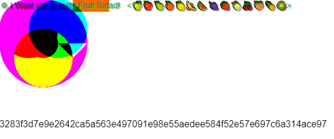

A browser fingerprint is a form of online tracking. When using a website, scripts run in the background, providing a set of instructions to tell your browser what to do (Avast). These scripts have the ability to access enough information, without you knowing, about your browser settings, device specifications, and other information to uniquely identify you (Avast). Additionally, some information may be gathered passively from the HTTP header (Pugliese et al. 559)--HTTP headers contain metadata that is exchanged between your devices and the websites they access. This means that your unique profile, or “fingerprint,” can be used to track your activity across the Internet, even when using private or incognito browsing, making it more invasive than cookies (Avast).
In 2018, a study found 35.7% of computer fingerprints, and 18.5% of mobile device fingerprints, to be unique but also declared the state of a non-unique fingerprint to be fragile (Gómez-Boix et al. 312). It only takes a few minor changes in your browser settings or the download of a new plugin to individualize your fingerprint. A long-term study of fingerprinting was later performed in 2020 which found 64.6-94.5% of users trackable with their fingerprint remaining stable an average of 10.7-11.9 weeks (Pugliese et al. 572).
Below is an example of canvas fingerprinting, courtesy of Jon B. on CodePen. Visit the page to see how your browser differs in the graphic and hash from mine.
Here is one by Dave Alger that shows information of your device gathered by Javascript fingerprinting.
Though you can delete your cookies, there is no way to delete your browser fingerprint, nor may they be stopped by VPNs (Avast). The scripts that collect your information are also vital for your browser to run the website, without them the website would break (Avast). Fingerprints can be used to track your activity and link it to you despite all other protections you may take. Check how well your computer set-up defends against canvas fingerprinting here (unique = bad). For a more in-depth explanation of what fingerprinting looks like, check out this website.
As browser fingerprinting is entirely legal, it is up to you to prevent it on your device. Although VPNs, ad blockers, and private browsing cannot stop fingerprinting, there are other tools you can use to do so.
Some browsers contain anti-fingerprinting protection, such as Brave, Firefox, or Epic. Some browsers, like Firefox, will require tweaking some settings to utilize their online tracking and data collection prevention. These will likely offer the best free protection against fingerprinting that exists right now. Alternatively, you can download other software specially designed for keeping you safe from fingerprinting, such as Avast AntiTrack ($49.99/year).
Some believe fingerprinting will become less dangerous as the Internet evolves–e.g. the departure from plugins such as the once ubiquitous Flash–with one study estimating the removal of HTTP headers and browser plugins to decrease the occurrence of unique fingerprints by 36% (Laperdrix et al.).